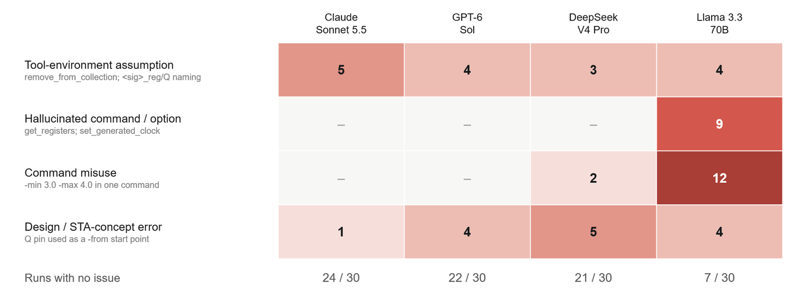
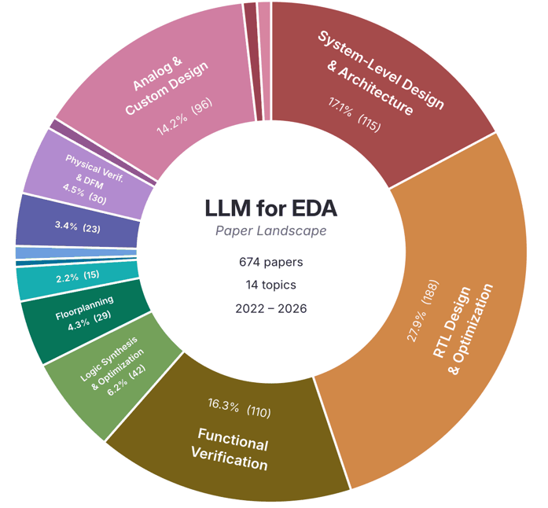
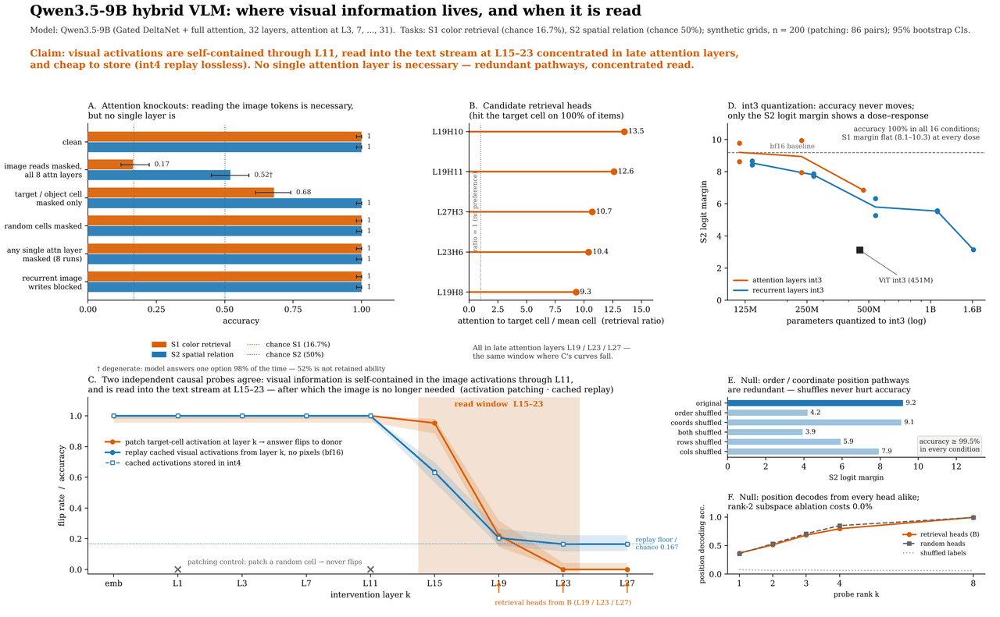
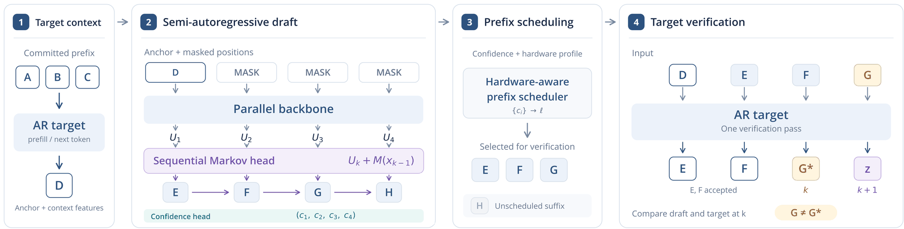
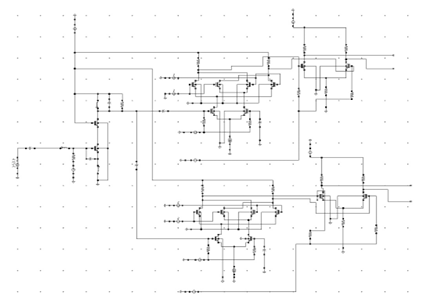
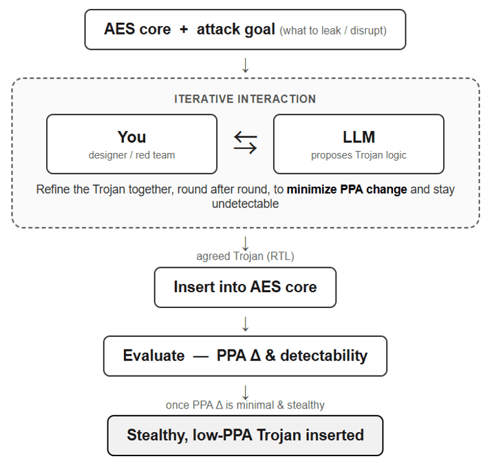
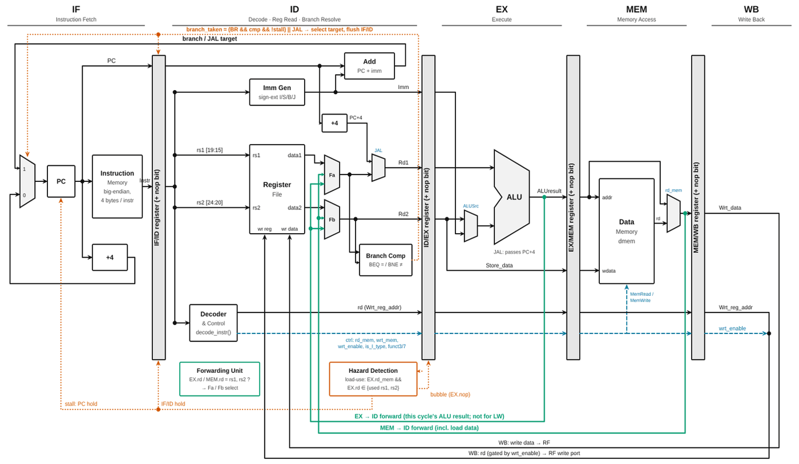

I build and evaluate LLM systems that automate hardware design, from RTL to GDS.
I am an M.S. student in Electrical Engineering at New York University. I received my B.S. in Microelectronics Science and Engineering from Lanzhou University in 2025.
Beyond hardware design, I explore LLMs broadly, from KV cache optimization, quantization, and speculative decoding to the internal mechanisms of vision-language models, LLMs, and diffusion language models.
I am applying to Ph.D. programs for Fall 2027.
Ongoing projects

Intent-Aware LLMs for Conversational Timing Constraint Generation
A two-tier benchmark for LLM-generated SDC timing constraints, scored with syntax, semantic, and timing-report checks in OpenROAD; now improving generation with LoRA fine-tuning.

Deep Research Benchmark for EDA
A benchmark of 100+ questions across 14 EDA research topics for evaluating deep-research LLM agents.

Recurrent-State Control of Retrieval in Hybrid Vision-Language Models
Studies whether hybrid VLMs retrieve answers from the recurrent state or the KV cache; I lead the prompt-injection evaluation. Manuscript in preparation.

Diffusion-Based Speculative Decoding for Efficient LLM Inference
Memory-efficient long-context diffusion LLM inference, drafter quantization, and training-free verification rules for diffusion-based speculative decoding.
Past projects

2.4-GHz Direct-Conversion CMOS Receiver Signal-Path Design
LNA, Gilbert-cell mixer, and IF stage in Cadence Virtuoso, reaching 37.1 dB gain within a 100 nH on-chip inductance budget.

AI-based Hardware Attacks (AHA!) Challenge
Three LLM-generated hardware Trojans in the Secworks AES core, including a time bomb that leaks part of the secret key.

Cycle-Accurate RV32I Processor Simulator
Single-cycle and five-stage pipelined RV32I cores in Python, with forwarding, hazard stalls, and branch flushing, compared by CPI on benchmark programs.
Publications
Srinivas Harish, Fangyi Yu, Anshul Singh, Sai Qian Zhang. Manuscript in preparation.
Fangyi Yu. The 2nd International Conference on Machine Learning and Automation, 2024.
Fangyi Yu. 2nd International Conference on Artificial Intelligence, Database and Machine Learning (AIDML 2024), 2024.